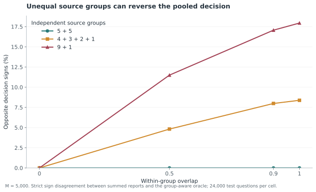
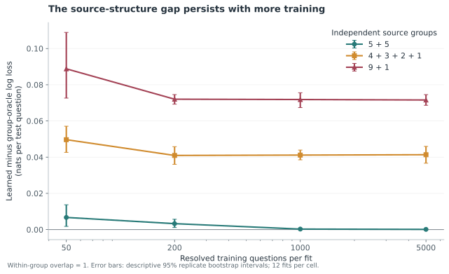
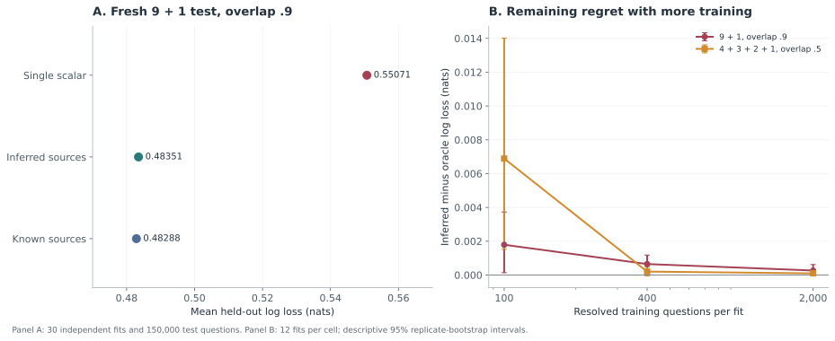

How many independent forecasts are in a crowd?
In this article
Ten people agree that something is likely to happen. How much evidence is that?
It depends on what they know. Ten forecasts can reflect ten independent observations, or ten versions of the same observation. Even if every forecaster is individually calibrated, their agreement does not tell us which situation we are in.
I built a small synthetic experiment around that distinction. The question was whether a single learned discount could correct for shared evidence, where that correction would stop working, and whether resolved forecasts could reveal enough of the missing structure to repair it.
The work happened in three stages: an original frozen experiment, an exploratory stress sweep prompted by its result, and a fresh frozen experiment on learning source groups. Keeping those stages separate matters. A failure found while exploring can motivate a new test, but it cannot turn into a prediction made before the exploration.
Counting shared evidence#
Start with a binary outcome and a 50% prior. Each forecaster sees a signal:
The shared noise and private noises are independent standard normals. Signal strength is ; conditional overlap is . Each forecaster reports the correct posterior for their own signal, with log odds . The construction makes individual forecasts calibrated by design. It also lets us calculate the exact joint posterior:
With independent evidence, the log odds add. With perfectly shared evidence, the same observation counts once. Between those extremes, the denominator measures how much the simple sum overcounts.
For ten forecasters with overlap .5, the effective signal count is , about 1.82. That is an information equivalence inside this model. It is not a claim that a real group contains 1.82 independent people. Raw forecast agreement also mixes shared noise with shared information about the outcome, so it cannot simply be substituted for .
Learning the discount#
The next step is to hide the overlap and learn a multiplier from resolved questions. The learner predicts , fitting between zero and one on training log loss. It receives forecasts and outcomes, with no source labels or true overlap.
The frozen primary experiment used ten forecasters, overlap .5 and signal strength .5. Each of 30 independent repetitions used 200 training questions and 10,000 fresh test questions. Lower log loss is better:
| Method | Mean test log loss |
|---|---|
| Arithmetic mean of probabilities | 0.54316 |
| Pool assuming independent evidence | 1.17889 |
| Learned discount | 0.51029 |
| Exact posterior with known overlap | 0.50739 |
The learned pool improved on the arithmetic mean by 0.03287 nats per question and on the independence pool by 0.66860. The prespecified paired 97.5% bootstrap intervals for learned minus comparator were [-0.03452, -0.03085] and [-0.67694, -0.66031]. The bootstrap resampled whole repetitions, so the uncertainty includes fitting on a fresh training set. These are approximate intervals, adjusted for the two primary comparisons, rather than exact finite-sample guarantees. The primary analysis contains the scores and intervals; the frozen manifest records the design.1Primary analysis, frozen manifest and full ledger, Arya Somu (2026).
That is a useful result in a deliberately simple world. The more interesting question is what happens when the sharing is uneven.
When the crowd points the wrong way#
Suppose nine reports come from one source and the tenth comes from an independent source. In the fully duplicated limit, imagine the nine reports say .6 while the independent report says .1. Multiplying all ten odds gives about .81. Counting each source once gives , about .14.
A positive multiplier can reduce the confidence of that .81 prediction. It cannot move it below .5. A zero multiplier can only return .5. The problem is already present in the direction of the summed evidence.
After completing the primary experiment, I specified an exploratory stress grid covering 192 combinations of overlap, signal strength, ensemble size, training size and source partition. It includes 1,728 training fits and 2,304,000 held-out question rows. The primary evaluation and this later sweep have different evidential roles: the sweep maps sensitivity after the original result was known.
The nine-plus-one case exposes the limitation. At within-source overlap .9,
with 5,000 training questions per fit, the learned pool's mean log loss was
0.55187. The source-aware oracle achieved 0.48230. The gap was 0.06958 nats,
with a descriptive 95% interval of [0.06634, 0.07291]. The learner still beat
the arithmetic mean, whose loss was 0.56009, but considerable information
remained unused. These values come from the groups-9-1-rho0.9 cell of the
stress report.
Across that cell's 24,000 test questions, the summed logits and source-aware oracle pointed to opposite sides of .5 on 4,095 questions, or 17.06%. The sign diagnostic records those counts. No amount of training can make a nonnegative scalar reverse the sign of the same summed input. The structural failure survives better estimation of the scalar.2Exploratory stress report and full ledgers, Arya Somu (2026).

The equal-sized group control helps explain why. With two groups of five at the same .9 overlap and training size, the learned pool scored 0.47734 and the oracle 0.47718. Equal groups need equal discounts. Unequal groups generally need different discounts, which a single scalar cannot express. The small observed gap in the equal-group control is consistent with that distinction; it does not prove exact equality of learned and oracle performance.

Can the forecasts reveal their sources?#
The stress test gives the oracle an advantage: it knows which reports belong together. That makes it a useful reference, but leaves a practical question. Can a learner infer enough of the grouping from a history of forecasts and resolved outcomes?
I used a deliberately small learner. It receives the same forecaster columns on every training question and the binary outcome after resolution. It never receives source labels, true overlap, signal strength, simulator noise or test outcomes. The source labels are hidden, but the learning is supervised: the resolved outcomes do essential work.
Correlating the forecasts directly would be misleading. Two independent forecasters can move together because both detect the outcome. In this model, write the logit vector as
where the noise covariance is . Unconditional covariance contains both , from the common outcome, and , from the noise. Only the latter describes the overlap we want.
The symmetry of this simulator gives a simple way to separate them. For every resolved training question, multiply each logit by the outcome sign:
Now and . After centering each column by its training mean, correlations of these signed logits estimate the noise correlations. Within a true source group the population correlation is ; across independent groups it is zero. The transformation works because of the model's symmetric conditional means and noise. It is not a general recipe for removing outcome information from arbitrary forecasts.
The learner connects two forecasters when their estimated correlation exceeds one fixed threshold, then takes connected components as estimated groups. For forecasters and resolved training questions, the threshold is
This is a conservative heuristic. The constant .05 does not confer a proved 5% false-link guarantee. Exact duplicate training-logit columns are also connected when their signed residual variance is positive, covering complete duplication. A column with no residual variance provides no evidence of a link.
Next, the learner estimates a common overlap by averaging correlations within its inferred components and clipping the result to [0, 1]. A forecaster in an inferred group of size receives weight
It fits one final multiplier on training log loss and predicts . For known groups and overlap, the weighted sum is the exact group posterior log odds. Estimating the weights allows the learner to reduce the influence of the nine related reports while retaining the independent tenth report.
All stages reuse the training set. There is no hyperparameter search or selection among candidate learners. The whole fixed procedure is evaluated on fresh questions, including any errors introduced by estimating the groups, overlap and final multiplier.
A fresh test of the nine-plus-one case#
I froze the follow-up protocol, implementation and configurations before running its final holdouts. This was a new synthetic test designed after the stress results, not an external preregistration or a replication of the original primary claim. The protocol and hashed lock record that boundary.
The primary follow-up used nine related forecasters and one independent forecaster, within-group overlap .9 and signal strength .5. Each of 30 independent repetitions used 400 resolved training questions and 5,000 fresh test questions. Both learned methods received the same training data. The training budget is larger than the original experiment's 200 questions, and this test uses fresh draws rather than the earlier stress batches.
| Method | Mean test log loss | Mean test Brier score |
|---|---|---|
| Prior of .5 | 0.69315 | 0.25000 |
| Arithmetic mean of probabilities | 0.55832 | 0.18848 |
| Pool assuming independent evidence | 1.57817 | 0.24691 |
| Learned scalar discount | 0.55071 | 0.18571 |
| Learned groups and discount | 0.48351 | 0.15920 |
| Exact posterior with known groups and overlap | 0.48288 | 0.15904 |
Lower is better for both scores. The prespecified decision rule concerned log loss and required both of these paired comparisons to pass:
| Comparison | Mean difference in log loss | Paired 97.5% bootstrap interval | Prespecified gate |
|---|---|---|---|
| Inferred groups minus scalar | -0.067204 | [-0.069405, -0.065002] | Upper endpoint below 0 |
| Inferred groups minus oracle | 0.000622 | [0.000239, 0.001115] | Upper endpoint below 0.01 |
Both gates passed. The second establishes proximity under the chosen tolerance of .01 nats per question. It does not establish equality with the oracle; indeed, the estimated regret is positive and its interval excludes zero.
The intervals use 10,000 paired bootstrap resamples of whole repetitions, including a new training fit in each repetition. The two 97.5% intervals were prespecified to adjust for the two primary log-loss statements. Their coverage is approximate with 30 repetitions; a multiplicity adjustment cannot repair bootstrap undercoverage. The 150,000 test questions should not be mistaken for 150,000 independent estimates of the training procedure's performance.
The fitted partition matched the true partition in all 30 repetitions, with no pairwise co-membership errors. Mean estimated overlap was .89920, against true overlap .9. Even with the partition recovered, overlap estimation and calibration still left a small prediction gap.
The scalar's mean regret relative to the oracle was .067826 nats; the inferred group learner's was .000622. Using the unrounded values, the fraction closed is
This is a descriptive ratio of mean regrets, not an extra hypothesis test or a percentage improvement in accuracy. The report flags this ratio as unstable when the scalar's regret is below .001 nats and leaves it undefined when the denominator is nonpositive.
The direction diagnostic also changed. The scalar and oracle pointed to opposite sides of .5 on 25,222 of the 150,000 test questions, or 16.81%. The inferred learner agreed with the oracle on 25,153 of those cases, repairing 99.73% of the scalar's opposite-sign decisions. Across all questions it still opposed the oracle on 110, or .0733%; repairing old disagreements can coexist with introducing new ones. There were no exact-zero ties in this primary run. These are disagreements with a reference posterior, not counts of observed classification errors. The complete follow-up report contains every method, contrast and diagnostic.3Frozen follow-up report and full ledgers, Arya Somu (2026).
What breaks with fewer resolved questions?#
A successful primary cell can hide brittle behavior. The same frozen suite therefore included all 36 combinations of three partitions (9+1, 5+5 and 4+3+2+1), four overlaps (0, .5, .9 and 1), and three training sizes (100, 400 and 2,000). Each cell used twelve independently fitted repetitions and 2,000 test questions per repetition. That adds 864,000 test question rows. The training-size streams are independent, so these are separate experiments rather than successive checkpoints on the same growing training set.
The small-sample failures matter. At 100 training questions, partition 4+3+2+1 and overlap .5, the learner recovered the partition in eleven of twelve repetitions. In the remaining repetition it split the true group of three into three singletons. The cell's mean regret was .006886 nats, compared with .000202 at 400 training questions and .000097 at 2,000. It still improved on the scalar by .017643 nats at 100 questions, but recovering most partitions was not enough to make the remaining prediction cost disappear.
Even exact group recovery does not remove calibration overfit. At 100 training questions in the fully duplicated 9+1 case, all twelve partitions were correct and the estimated overlap was effectively one. Before the final calibration step, the structural pool therefore matched the oracle. Fitting the additional multiplier sometimes shrank it too far: in repetition 9, was .67656 and held-out regret was .017978 nats. The cell's mean regret was .004606. Here the saved fitted states locate the problem in calibration, even though source recovery succeeded.
There is another asymmetry built into the learner. Its final multiplier can reduce confidence but cannot exceed one. If the estimated overlap is too high, the weights already discount too much, and this final step cannot restore the missing confidence. Connected components have a different vulnerability: one noisy edge can merge otherwise separate groups. Those are limitations of the fixed procedure, whether or not a particular cell exposes them.

The equal-sized groups remain a useful control. At 5+5, overlap .5 and 2,000 training questions, inferred groups improved on the scalar by only .000057 nats; the descriptive interval for inferred minus scalar was [-.000228, .000045]. Equal group sizes already admit a common scalar discount. Recovering their labels does not create a large structural advantage over the simpler learner.
At zero overlap, partition recovery is marked not applicable. The latent labels do not affect the distribution, so there is no statistical information from which to recover them. In all zero-overlap cells, the fitted graph used ten singleton groups and its predictions matched the scalar learner. Calling this a failure to recover the simulator's arbitrary labels would confuse prediction with an unidentifiable bookkeeping choice.
Some observed regrets relative to the oracle are slightly negative. The 4+3+2+1 cell at overlap .9 and 400 training questions, for example, has mean regret -.000095 nats. A finite test sample can favor a fitted predictor by chance even when the oracle is optimal in expected log loss. That is not evidence that the learner surpasses the true posterior.
All sensitivity intervals are descriptive 95% intervals without adjustment across the grid. Twelve fits per cell give limited information about rare failures. The earlier stress sweep was also descriptive, with eight fits per exchangeable cell and twelve per grouped cell; its conditions shared random draws. Neither grid supports treating its total question count as a count of independent experiments or selecting one favorable interval as a new primary claim.
What the experiment supports#
The original primary test showed that a single learned discount can correct substantial overconfidence when overlap is exchangeable. The exploratory stress test exposed a limitation that more scalar training cannot fix: unequal source groups can make the summed evidence point in the wrong direction. The fresh follow-up showed that resolved forecasts can reveal enough dependence to repair much of that failure inside this stable Gaussian model.
Those conclusions have an unusually clear boundary. Forecaster identities stay fixed across questions. Groups and their overlap stay fixed. Every forecaster has equal signal strength and correct individual calibration, all share a half prior, and no forecasts are missing. The noise is Gaussian and the source groups are disjoint and independent. Real forecasters can violate all of these assumptions at once. A recovered correlation component is not causal proof that people read the same article or that models share a source. The experiment provides no human or AI validation, distribution-shift result, or market-trading evidence.
Overlap-sensitive aggregation has substantial precedent. The research protocol and follow-up protocol describe the relevant literature and the relation to this elementary construction. The contribution here is an inspectable worked example with a structural failure and a tested repair under declared assumptions, not a general theorem identifying hidden sources.
The public reproducibility archive contains the verifier code, frozen configurations and all full synthetic ledgers. The evidence is saved at the question level. The follow-up's independent verification receipts cover all 462 fitted repetitions, 1,386,000 generated training and test rows, and 6,084,000 test predictions across the primary and sensitivity runs. Verification regenerated questions and recomputed fits, predictions and scores; a matching checksum alone would not establish those properties. The original experiment and exploratory sweep retain their own separate protocols, reports and replay records.
I started by asking how much confidence to put in ten agreeing forecasts. The experiments made the question more specific: which parts of their evidence repeat, and can the history of resolved questions tell us? In this model that history often can. The remaining work is to understand how much of the answer survives when the forecasters, their calibration and their sources stop holding still.
Cite this essay
@misc{somu2026independentforecasts,
title = {How many independent forecasts are in a crowd?},
author = {Somu, Arya},
year = {2026},
url = {https://aryasomu.com/writing/how-many-independent-forecasts-are-in-a-crowd.html}
}